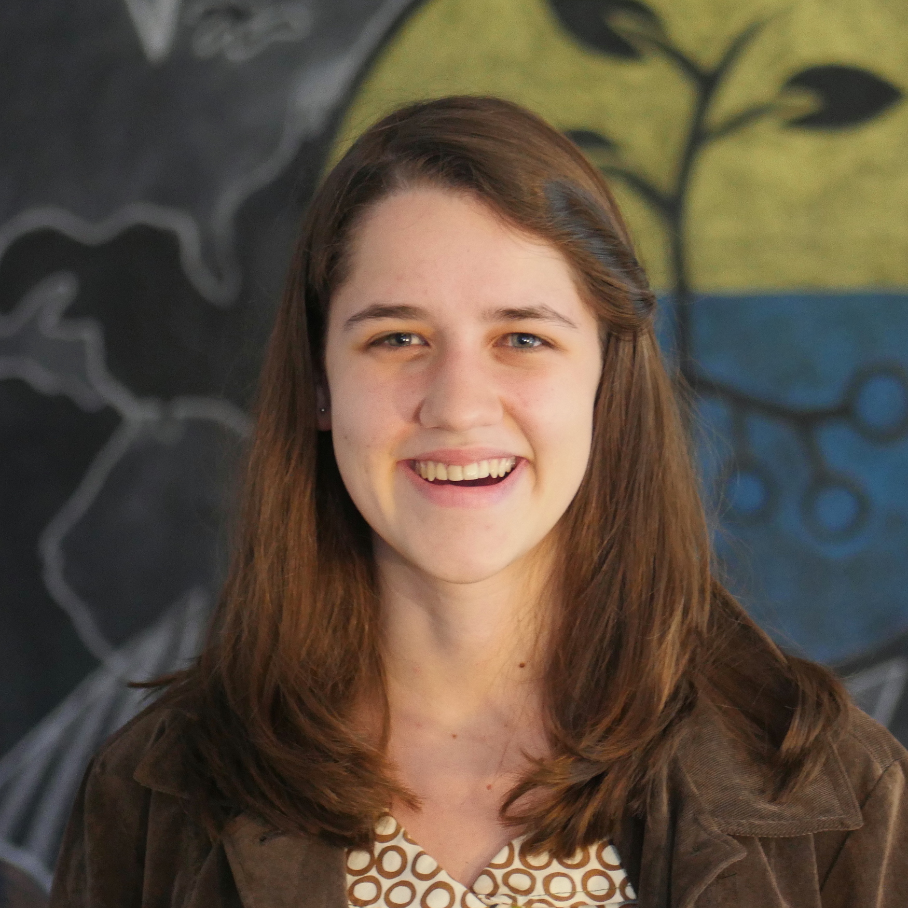

Amelia Holcomb
Software Engineer
About Me
I am a mathematician and computer scientist who is passionate about using her skills to fight climate change and biodiversity loss.
Currently, I am pursuing master's degree in Computer Science at the University of Waterloo, supervised (remotely) by Srinivasan Keshav at Cambridge University. My thesis is investigating the use of computer vision and IoT sensing to monitor forest carbon sequestration.
Before this, I did my undergraduate degree in mathematics at Yale University, and I worked as a Site Reliability Engineer on databases at Google.
News & Events
As part of ClimateAction.Tech, I'm helping to organize a TEDx conference on the role the tech industry can play in fighing climate change! The event is on December 16, and you can register here.
Papers
Currently drafting a part of my thesis project into a conference paper.

Projects

Basic implementation of Secure Socket Layer Protocol
on top of a TCP/IP server and client

Algorithm that allows input of employee shift time preferences
and outputs a mutually acceptable assignment of shifts for all employees

OpenMPI parallelization of sparse matrix multiplication
achieving up to 5.7x speedup with 8 processors over serial implementation

Modified version of UNIX bash shell, including
piping, backgrounding, forking, file navigation, and signal handling
Diversity in STEM
I co-founded Iota, a group focusing on diversity in the Yale math department. In 2016, we conducted surveys and interviews of both students in the math major and those who had left it, and compiled our findings and recommendations into a 26-page report. The report was only shared internally with the Yale College Dean's Office and the Math Department, but email me if you're interested in learning more.
Check out articles in the Yale Daily News featuring interviews with me about diversity in CS, here and here.
If you're in NYC, please also check out the amazing BEAM program.
Hosted on GitHub Pages — Theme by orderedlist